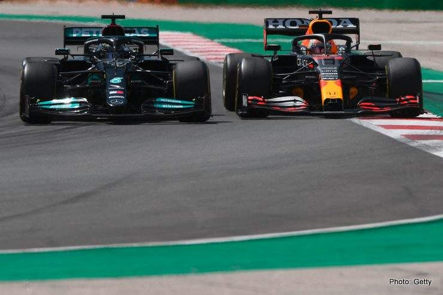
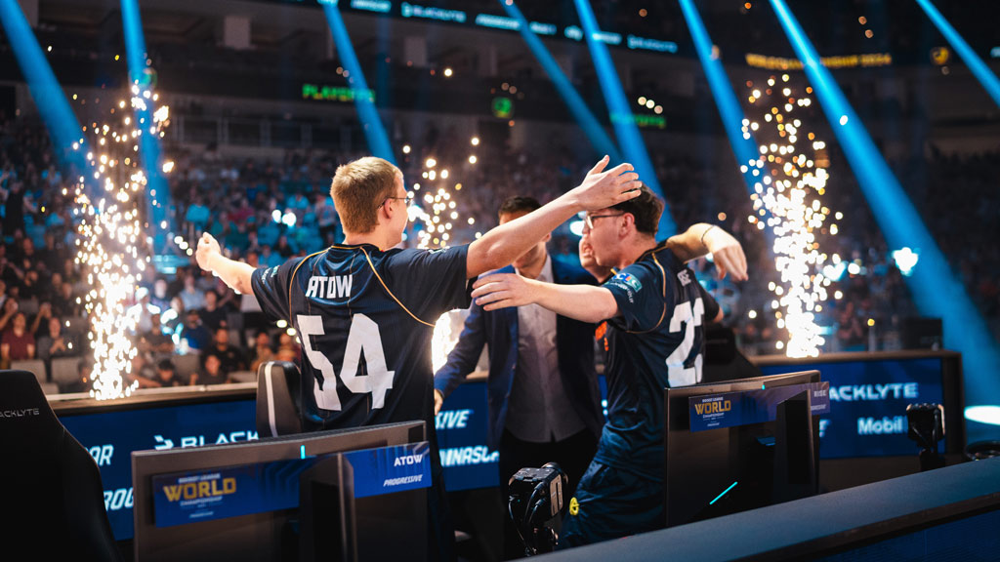
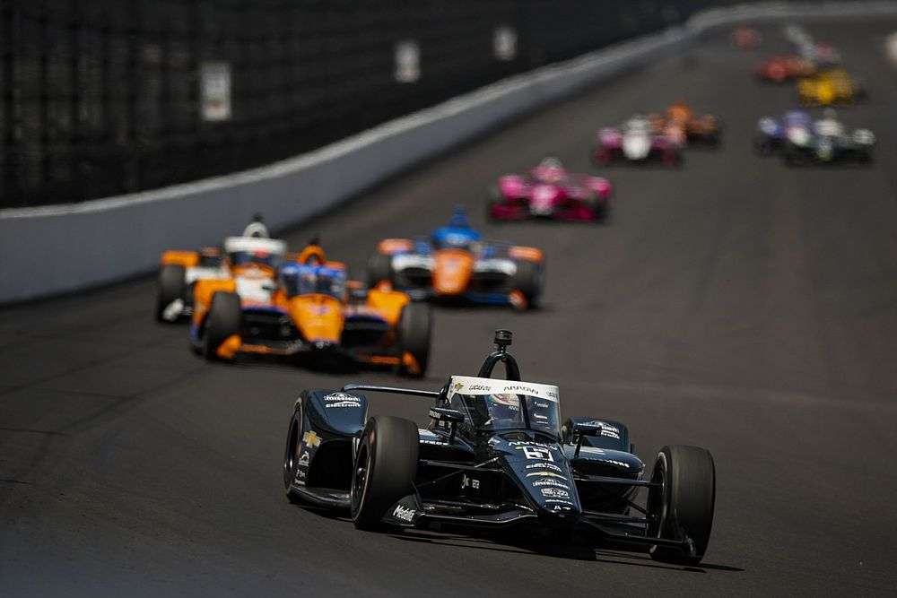

Algunos no tan vistos de mi parte, pero que aun asi me gustan

Formula 1
La Formula 1 es mi categoría del automovilismo favorita. Es el pináculo de todo el automovilismo mundial, el significado de
ingeniería, tecnología y logistica de punta. Cuna de los pilotos mas capaces y de mayor nivel que puedan existir en el mundo.

eSports
Los eSports son competencias profesionales de videojuegos, en las cuales compiten los mejores jugadores del mundo representando
a un equipo o a su país. Juegos como League of Legends, Rocket League, Counter Strike, entre otros, son algunos de los
más populares en el ámbito de los eSports. En lo personal me gusta ver las competencias de Rocket League, un juego que mezcla el fútbol
con autos propulsados por cohetes.

Las 500 Millas de Indianapolis (Indy 500)
Las 500 Millas de Indianapolis, como su nombre lo indica, consiste en una carrera de 500 millas o 200 vueltas alrededor del ovalo del Indianapolis Motor
Speedway. Es una de las carreras mas prestigiosas y antiguas del mundo, con su primera edición concretandose en 1911.